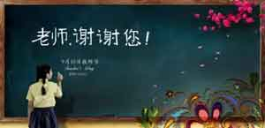
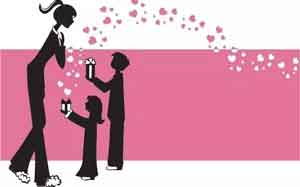
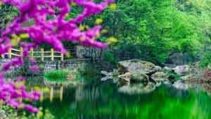
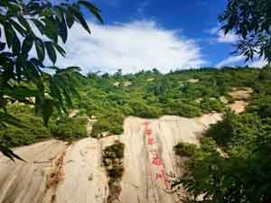
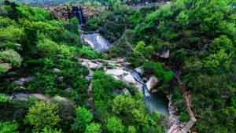
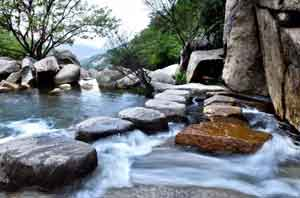
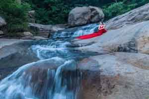
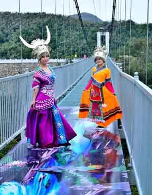

秋意浓浓送温情，情意深深暖师心。为表达对教师的尊敬，七十二潭景区9月10日特别对教师实行优惠政策！活动如下： 活动地点：七十二潭景区 活动时间：2017年9月10（教师节当天） 优惠政策：凭持有国家颁发的教师资格证本人，可享受免门票优惠活动（需购买5元/人保险） 适用人群：团队、散客

景区简介:方城县七十二潭景区位于方城县城北部，总面积25平方公里，省道239线从景区山门前经过，距离许平南高速方城站18公里，交通极为便利。它是伏牛山自然保护区、伏牛山世界地质公园的重要组成部分，也是伏牛山世界地质公园入口处一个具有独特地貌特征的景区，有“中华第一石川，亲水休闲佳境”之美誉。
 
景区树茂花香、空气清新、瀑潭相连、跌水潺潺。景区石川地貌，形成于两亿五千万年前，由整块梯级延展长达4公里的花岗岩石构成，气势恢宏、结构独特，远观斗折蛇行、明灭可见，在全国绝无仅有、实属罕见。v
 
石川内长年泉流不息，泉水随着山势起伏跌宕而下，形成近百个形态各异的石穴潭池，宛如一条巨龙在山谷中潜伏。自景区入口拾级而上，迎宾潭、老龙潭、神龟潭、双龙潭、福禄潭、五连潭、情侣潭等，一水一潭，一潭一景，传情达意、播撒祝福！

七十二潭还有供人戏耍的走瀑溯溪，惊险刺激的3D高空玻璃桥，扣人心弦的魔幻宫，精彩的少数民族演艺，滑草、空中飞人，玻璃滑道等娱乐项目让您不仅可以欣赏美景，还能体验游玩的乐趣
